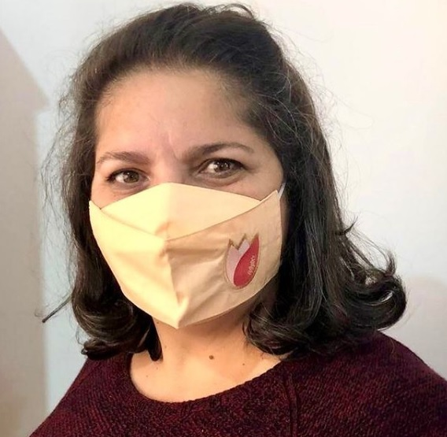

Quem Somos
Após muito sonhar, as irmãs Luana, Daniela e Rafaela Jacques, juntamente com a mãe
Marilene Jacques resolveram realizar! O sonho era uma marca de moda feminina autoral, o Tulipário!

Mari
Modelista e costureira, responsável por materializar cada uma das peças que sai do Atelier.
Lua
Social Media responsável por atualizar, monitorar e gerar conteúdo para as páginas oficiais da marca.
Dani
Responsável por desenvolver um planejamento de finanças e controlar as operações da empresa.
Rafa
Marketing e Vendas, responsável por atrair e nutrir Leads bem como avançá-los no processo de compra.